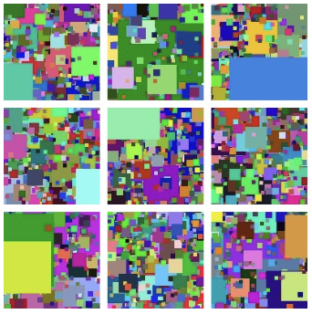
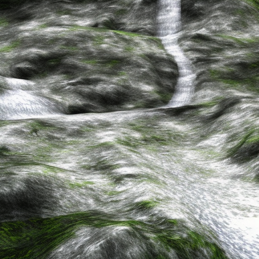
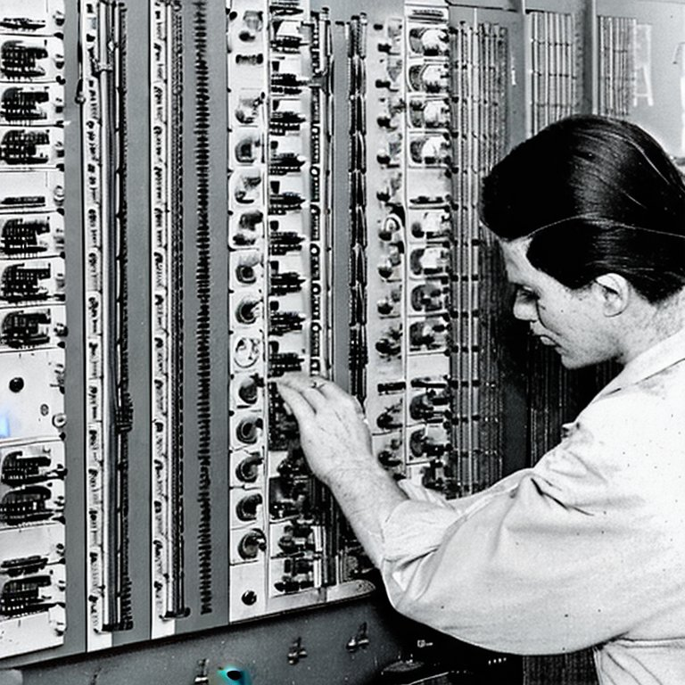
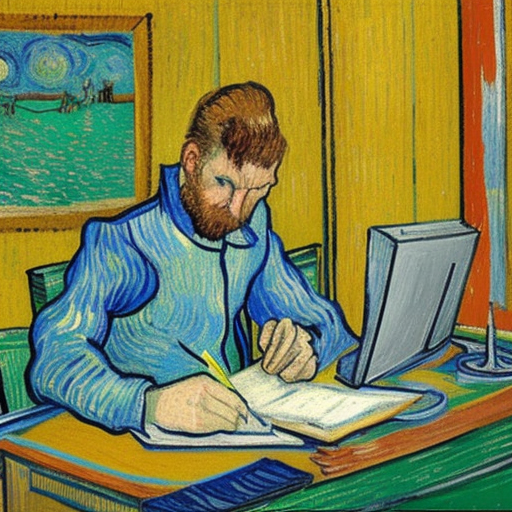

companion post for DSS 2023 conference

Not SOTA performance, but quite good

… instead of computing it yourself?

How to use it with code examples

Great advice from Andrew Ng
All you need to within weeks understand Deep Learning and be reasonably comfortable with papers.